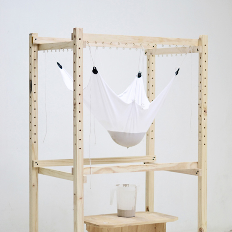
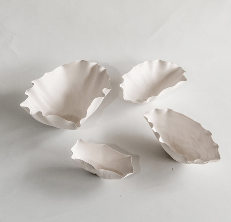
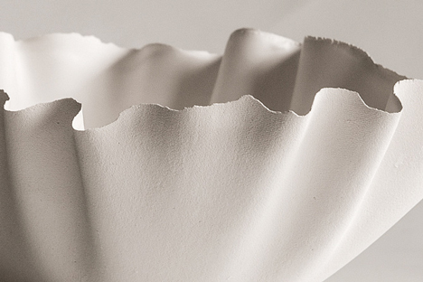

Introduction
Chilean studio Great Things to People (GT2P) has built a machine to generate pottery objects using an analogue version of parametric design. The Catenary Pottery Printer by GT2P comprises a wooden frame from which sheets of gauze, muslin or lycra can be suspended and used to slip-cast ceramics. Liquid clay, or slip, is poured into the fabric and allowed to drip through, leaving a thin layer behind that hardens into a small dish. Where digital parametric design would generate forms depending on the behaviour of a computer algorithm in response to a set of data, their system generates forms depending on the behaviour of the textile in response to a set of physical conditions.
Quotes
- "This is part of an exploration on how to create standard machines that generate non-standard results, mixing analogue numerical control with traditional material and techniques integrated in one real-time process," said Guillermo Parada of GT2P, adding that "parametric design is not necessarily a digital computation methodology."
- "This project gives us a new scope - more parametric, less digital - allowing us to speak about parametric design without computers and digital fabrication laboratories which generates dialogues from academic contexts to communities of artisans," he continued.


